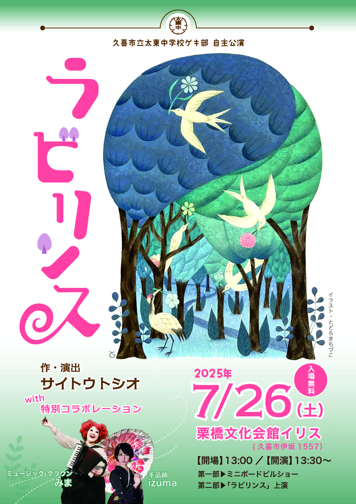
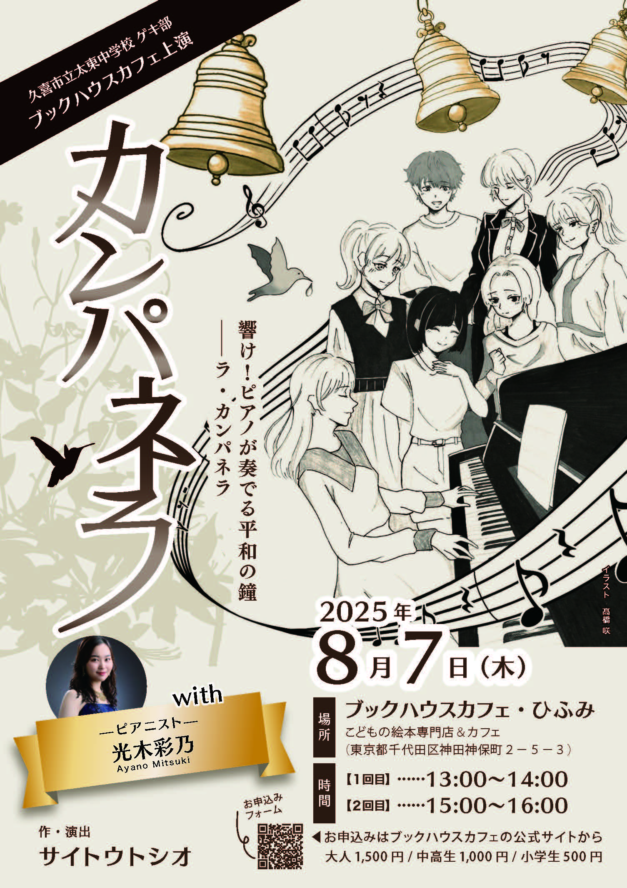
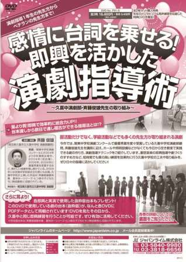

| 2026.2.5New |
七つ森は中学生が演じたときにもっとも輝くことができる劇づくりの取り組みを扱った中学校演劇、中学生のための脚本のサイトです。
管理人のサイトウトシオ(斉藤俊雄)が中学生と取り組んでいる劇とその脚本、上演記録等を紹介しています。また
中学生が学校を飛び出して、地域、社会戸繋がるため取り組みを始めた(その取り組みを全国に広めるために、逆説的に関東・全国大会の舞台から離れる選択をして取り組を始めた)ビブリオドラマ(本があるところで演じられる、本に関するドラマ)、絵本ドラマリーディング、その２つの取り組みを統合したビブリオ劇場やSHO-GEKI(小劇=短編が集まり、Show劇=ダンス、合唱などのパフォーミングアーツが入り、笑劇=コントのような笑いがあり、衝撃=なんらかの衝撃がある 劇)についても紹介しています。
大切にしている言葉は「競争より共創」、「Battle より Shuttle」です。
FUTURE 今後の上演日程(久喜市立太東中学校ゲキ部)
- ２０２６年８月１８日(火) 『カラーズ』 作・サイトウトシオ
久喜市立中央図書館の休館日に図書館全体を舞台に上演 プロマジシャン・ザッキーさんとのコラボ
※詳細はこれから - ２０２６年７月３１日(金) 『カラーズ』 作・サイトウトシオ
日本の絵本の聖地・ブックハウスカフェで上演 プロマジシャン・ザッキーさんとコラボ
時間 １回目13:00 ２回目15:00 ※詳細はこれから ★申し込みが必要です - ２０２６年７月２６日(日) 久喜市立太東中学校ゲキ部自主公演
場所 栗橋文化会館イリス ※詳細はこれから - ２０２６年７月２５日(土) 太東中学校ゲキ部主催埼玉県演劇交流会
場所 栗橋文化会館イリス ※詳細はこれから - ２０２６年４月１２日(土) ビブリオ劇場「絵本ドラマリーディングvol.2」
久喜市立中央図書館視聴覚室 ※詳細はこれから - ２０２６年３月１４日(土) ビブリオ劇場『アトム』 作・サイトウトシオ )
まちライブラリー@みんなのふくろう食堂(池袋)での上演
太東中ゲキ部の上演は14:00～
開場 12:30 太東中学校発表の前に絵本の読み聞かせとバイオリンの演奏が13:00～あります。
申し込みが必要です※ 詳細はこれから
hiSTORY 過去の上演記録(久喜市立太東中学校ゲキ部)
- ２０２６日１月１８日(日) 『カラーズ』 作・サイトウトシオ
市民芸術祭での上演 場所 久喜総合文化会館小ホール プロマジシャン・ザッキーさんとのコラボ - ２０２５年１２月９日(日) 『演劇的読み聞かせvol.1』演出・サイトウトシオ
久喜市立中央図書館昇格室で演劇的な絵本の読み聞かせを行う →「ビブリオ劇場」に発展 - ２０２５年１１月１日(土) 『カラーズ』 作・サイトウトシオ
オレンジコンサートでの上演 場所 久喜中央コミュニティセンタ プロマジシャン・ザッキーさんとのコラボ - ２０２５年８月１９日(火) 『ラビリンス』 作・サイトウトシオ
久喜市立太東中学校ゲキ部＆ミュージック・クラウンみまさん＆プロマジシャンizumaさん コラボ上演
久喜市立中央図書館の休館日に図書館を貸し切っての上演 卒業生も参加 ★読売新聞で紹介される - ２０２５年８月７日(火) 『カンパネラ』 作・サイトウトシオ
久喜市立太東中学校ゲキ部 ＆プロピアニスト光木彩乃さん
ブックハウスカフェ(日本の絵本の聖地)での上演 卒業生も参加する - ２０２５年７月２６日(土) 『ラビリンス』 ＆ミニ・ボードビルショー
久喜市立太東中学校ゲキ部＆＆ミュージック・クラウンみまさん＆プロマジシャンizumaさん コラボ上演
場所 栗橋文化会館イリス 卒業生も劇に参加 - ２０２５年７月２５日(金) 『ゲキを止めるな！影と光編』 作・サイトウトシオ
久喜市立太東中学校ゲキ部主催 埼玉県演劇交流会 場所 栗橋文化会館イリス - ２０２５年３月２９日(土) ビブリオドラマ『ゲキを止めるな』 作・サイトウトシオ
まちライブラリー@みんなのふくろう食堂(池袋)での上演 卒業生が劇に参加する - ２０２５年３月２３日(日) ビブリオドラマ『Book Birds 本を届ける鳥たち』作・サイトウトシオ
Book ＆ Cafe 里葉(大塚) での上演 卒業生が劇に参加する - ２０２５年１月２５日(土) 『カンパネラ』 『ビブリオドラマBook Birds 本を届ける鳥たち」 作・サイトウトシオ
太東中学校ゲキ部自主公演 ゲキ部＆プロのピアノデュオ光木彩乃さん・光木崇人さんとのコラボ
卒業生が劇に参加する 場所 栗橋文化会館イリス - ２０２５年１月１９日(日) ビブリオドラマ『ゲキを止めるな』 作・サイトウトシオ 市民芸術祭
★はじめて卒業生が劇に参加する - ２０２４年１２月２６日 ビブリオドラマ『Book Birds 本を届ける鳥たち』 作・サイトウトシオ
埼玉県大会 ※最後の埼玉県大会となる この後大会は演劇交流会に移行 - ２０２４年１１月２日(土) 『カンパネラ』 作・サイトウトシオ
太東中学校ゲキ部自主公演 ゲキ部＆プロのピアノデュオ光木彩乃さん・光木崇人さんとのコラボ
オレンジコンサート - ２０２４年７月７日(土) 『ビブリオドラマ２０２４』 作・サイトウトシオ
まちライブラリー@アトリア参宮橋で上演 ★この日、ビブリオドラマが学校を飛び出し本のある場所で上演 - ２０２３年１２月９日(土) 『セブン』 沖縄全国大会での上演
★太東中学校ゲキ部はこの上演を最後に大会という枠の外側での活動(中心はビブリオドラマ)を始めました
サイトウトシオ DRAMA SELECTION「バタフライ」十代に贈るドラマ
 なつの思い出 ……太平洋戦争が終わって４年後の１９４９年(昭和２４年)のドラマです。 最新中学校創作脚本集２０１８収録作品 神奈川全国大会参加作品
なつの思い出 ……太平洋戦争が終わって４年後の１９４９年(昭和２４年)のドラマです。 最新中学校創作脚本集２０１８収録作品 神奈川全国大会参加作品
イマジン……アメリカ同時多発テロ事件が起きた２００１年のドラマです。 中学校創作脚本集２０１９収録作品 富山全国大会参加作品
セブン ……ボブ・ディランがノーベル文学賞を受賞した２０１６年のドラマです。中学校創作脚本集２０２４収録予定作品 沖縄全国大会参加作品
応援歌 ……新型コロナウィルス感染拡大阻止のため全国の学校が休校となった２０２０年のドラマです。中学校創作脚本集２０２１収録作品 岩手全国大会参加作品
ゲキを止めるな！……コロナウィルス感染拡大阻止のために緊急事態宣言が複数回出された２０２１年のドラマです。中学校創作脚本集２０２０収録作品 福岡全国大会参加作品
バタフライ ……ロシアがウクライナに侵攻した、２０２２年とその前後のドラマです。 中学校創作脚本集２０２３収録作品
SHO-GEKI作品集 ……小劇＆Show劇＆笑劇＆衝撃の短い作品集です 中学校創作脚本集２０２２収録作品
ふるさと シリーズ・七つ森の子どもたち」斉藤俊雄作品集３
 下の題名をクリックすると、「斉藤俊雄作品集３ ふるさと」収録作品のあらすじと脚本を途中まで読むことができます。
下の題名をクリックすると、「斉藤俊雄作品集３ ふるさと」収録作品のあらすじと脚本を途中まで読むことができます。
「ふるさと」
「アトム」
「Happy Birthday」
「赤と青のレクイエム」
「夏休み」戦後七十年改訂バージョン【戦争三部作】
「私の青空」「青空」戦後七十年バージョン【戦争三部作】
「ずっとそばにいるよ」【戦争三部作】
◆後書き 「ふるさと」の後書きという名の劇
◆「演劇と教育」２０１６年１０月号
本 新刊-旧刊 斉藤俊雄作品集３「ふるさと」 書評
★ 「演劇と教育」２０１６年１１月号
実践記録 「ふるさと」とともに歩く 斉藤俊雄
夏休み〜シリーズ・七つ森の子どもたち〜斉藤俊雄作品集
 ２０１６年１０月、重版となりました。
２０１６年１０月、重版となりました。
下の題名をクリックすると、「斉藤俊雄作品集 夏休み」収録作品のあらすじと脚本を途中まで読むことができます。
「夏休み」
「青空」
「なっちゃんの夏」
「ときめきよろめきフォトグラフ」
「降るような星空」
「春一番」
後書き 春一番が吹いた日に〜後書きのためのインタビュー〜 この作品集がどのような思いから作られたのか、架空のインタビュー形式で紹介します。
七つ森〜シリーズ・七つ森の子どもたち〜斉藤俊雄作品集２

下の題名をクリックすると、「斉藤俊雄作品集２ 七つ森」収録作品のあらすじと脚本を途中まで読むことができます。
『七つ森』
『とも』
『ザネリ』
『怪談の多い料理店』
『魔術』
『森の交響曲(シンフォニー)』
「斉藤俊雄作品集２七つ森」後書き 「七つ森 いきものがたり」
NEWS 架空脚本講座「子どものための脚本の書き方」
-
架空脚本講座
「子どものための脚本の書き方〜七つ森の子どもたちを通して〜」
◆2012年演劇と教育10月号(晩成書房)に掲載されました。読みたい方は次をクリック→●
■プロローグ ■はじめに演劇部員ありき
■はじめに演劇部員ありき
■涙
■保護者ありき
■中学校の教師が書く脚本
■はじめにイメージありき
■登場人物決定と登場人物表
■アイディアノートと資料集め
■プロットとトンネル
■４色ボールペン
■声に出す
■第１稿の配布
■第２稿から最終稿へ
■行き詰まったら
■エピローグ
斉藤俊雄・脚本を上演した(今後上演する)学校・団体を紹介しています
子どもたちの感性を豊かにし、感動する心を育むために演劇部員とともに取り組んでいる自然観察会(名付けて「自然劇場」)の記録です。
ビブリオドラマ最新作 「カラーズ」

久喜市立中央図書館上演
ビブリオドラマ「ラビリンス」 
ビブリオドラマ「ラビリンス」

ブックハウスカフェ上演
ビブリオドラマ「カンパネラ」

サイトウトシオ作品集 「バタフライ」
久喜中学校演劇部「ふるさと」DVD

ジャパンライム社
斉藤俊雄作品集３「ふるさと」

斉藤俊雄・脚本づくりDVD
「私の脚本の創り方教えます」

ジャパンライム社
斉藤俊雄・演劇指導DVD
「感情に台詞を乗せる！即興を活かした演劇指導術」

ジャパンライム社斉藤俊雄作品集２「七つ森」

斉藤俊雄作品集 「夏休み」